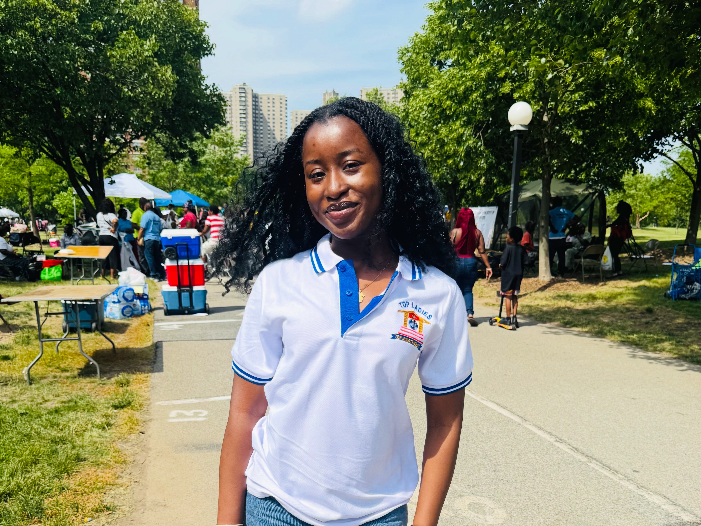
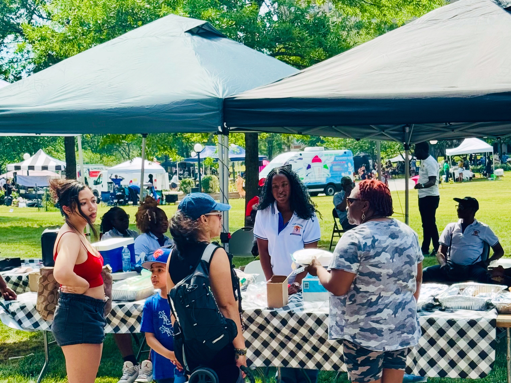
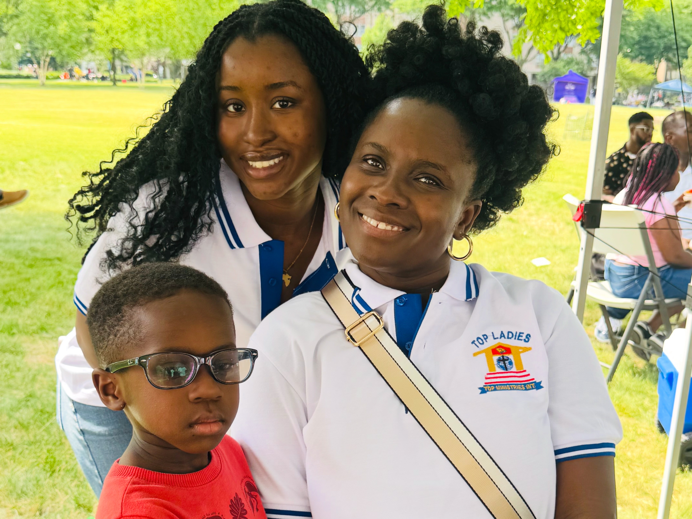
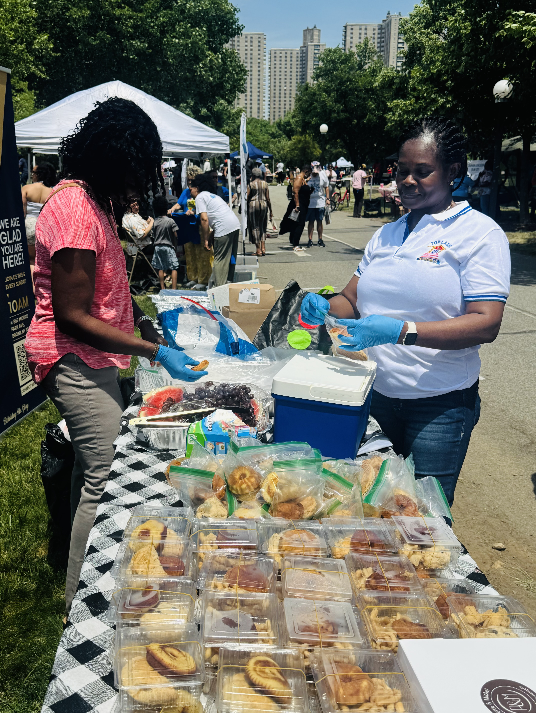
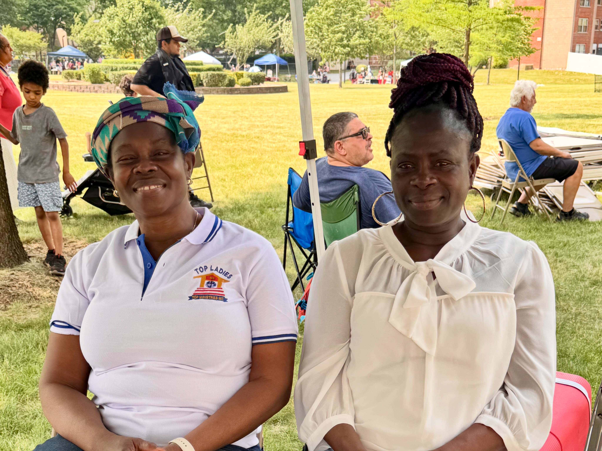
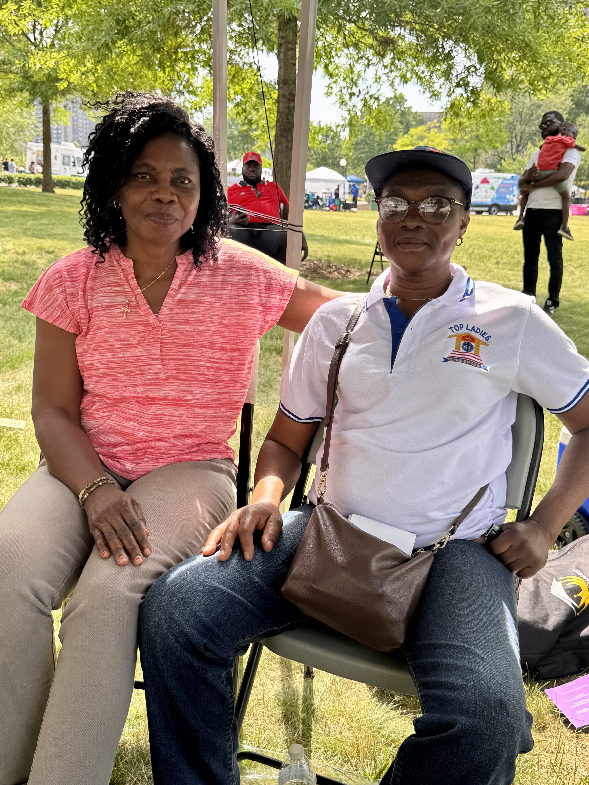
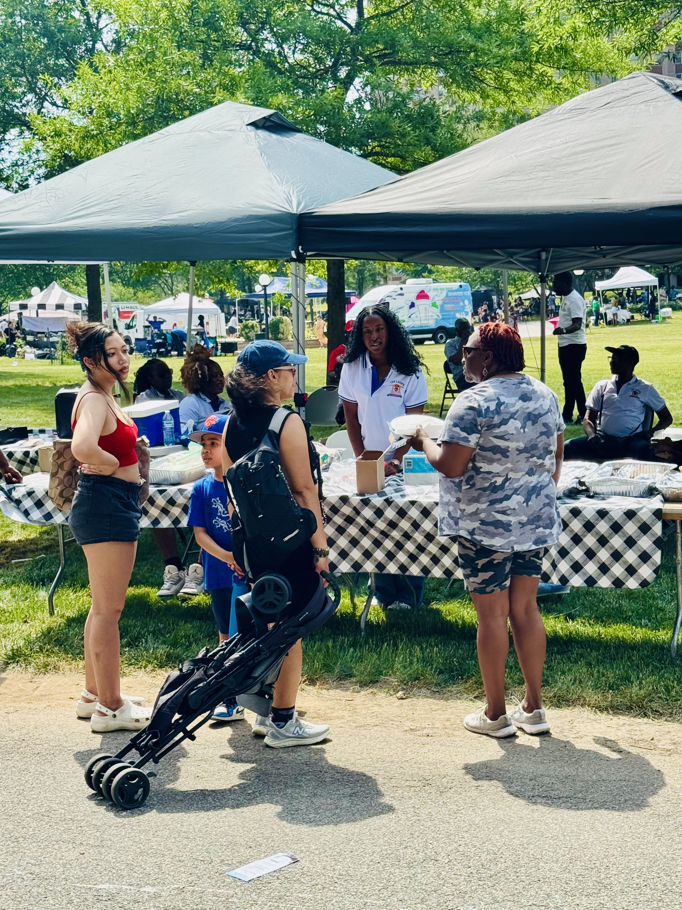
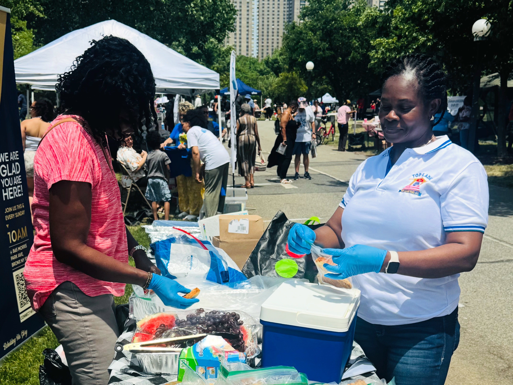
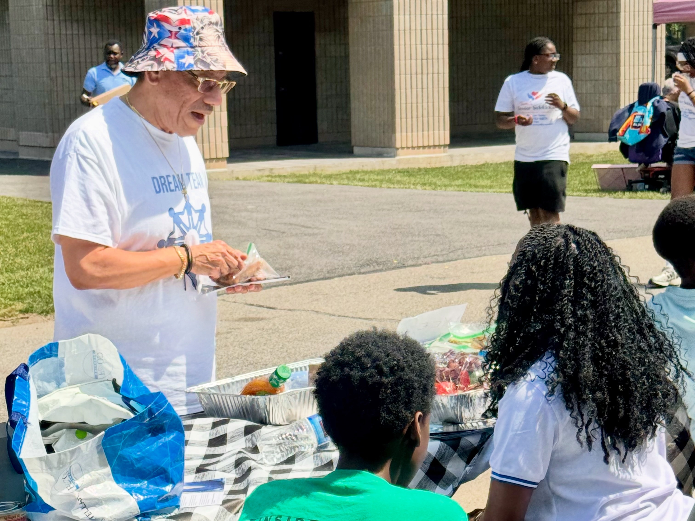

Community Outreach
Taking the Love of Christ
Taking the Love of Christ
to the Streets
DOXA Sanctuary brought food, fellowship, and the Gospel of Jesus Christ to the people of Co-op City, Bronx.
DOXA Sanctuary brought food, fellowship, and the Gospel of Jesus Christ to the people of Co-op City, Bronx.
At DOXA Sanctuary, the church doesn't wait for the community to come to us — we go to them. We take the love of Christ to the streets, showing up with food, fellowship, and the Gospel of Jesus Christ right where people are. Because we believe that faith without action is incomplete, and love without presence means nothing.
We are not content to simply hold services on Sunday and close our doors on Monday. We are a church on the move — alive, active, and deeply invested in the wellbeing of the people around us. The Bronx is not just the neighborhood we occupy. It is the community we are called to serve, to love, and to pour into with everything we have.
Our outreach is about more than a single act of generosity. It is about showing up consistently, intentionally, and wholeheartedly. When we go into the community, we come prepared — with hot meals, warm smiles, and small gifts that remind people they were thought of before we even arrived. A pen, a Gospel tract, a simple token to take home. Nothing extravagant. Just enough to say: someone cared enough to bring this for you today.
"We are not content to simply hold services on Sunday and close our doors on Monday. We are a church on the move."
DOXA SanctuaryAnd beyond the tangible, we bring something that cannot be packaged or handed out — genuine human connection. We sit with people. We listen. We pray. We look them in the eyes and remind them that they are not invisible, that their life has value, and that there is a community right here in the Bronx that has room for them.
Every time we step out into the streets, we carry with us the conviction that the Gospel is good news for the whole person — body, soul, and spirit. So we serve meals and we share the Word. We set up tables and we open conversations. We meet people exactly where they are, without judgment and without conditions, because that is exactly how God met each one of us.
Families, children, elderly residents, and people just passing through have all stopped, received, and left different than they came. Some walked away with food. Some walked away with a flyer and a fresh sense of hope. Some walked away with a conversation still ringing in their hearts. And some walked away with a decision to come back and find out more about the God who sent a church to find them on an ordinary afternoon.
This is who we are. This is what we do. And we are only just getting started.











Join our team and be part of reaching the Bronx and the world with the love of Christ.